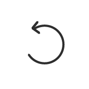
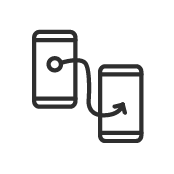

Voorwoord
Als een mooie afsluiter wilde ik een toepasselijke mobiele app bij mijn magazine maken. Het magazine is gericht op het bieden van inspiratie voor alle creatievelingen onder ons. Of je nou iets als een professional doet of het je hobby is. De app heeft hetzelfde doel, maar het biedt ook een online community waar je feedback, inspiratie, tips etc. van kan krijgen. Dit wordt met een wekelijkse design briefing ondersteund.